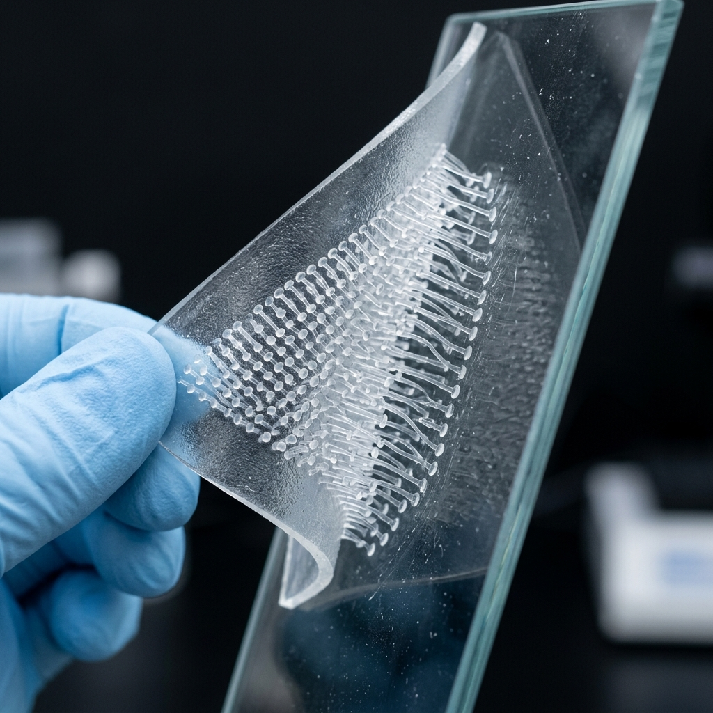
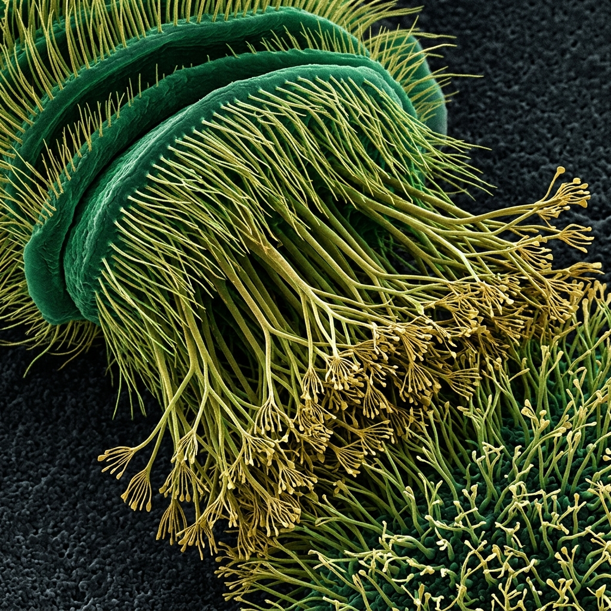
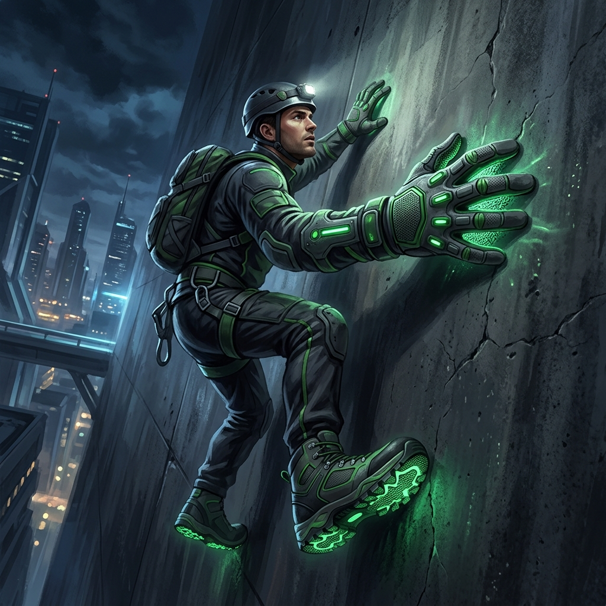
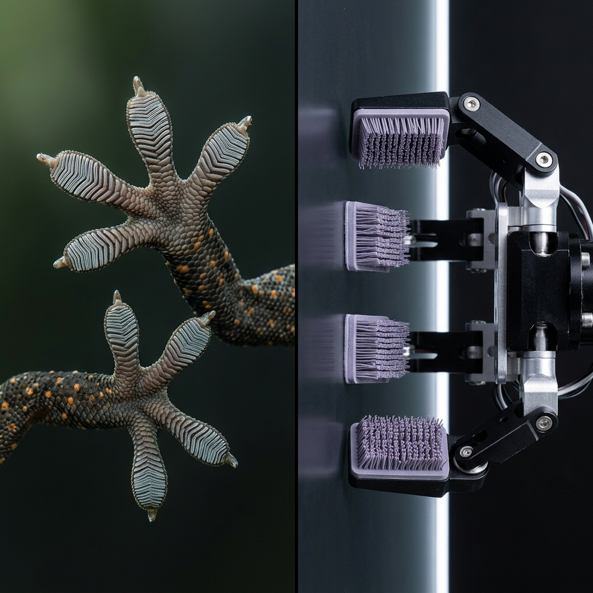
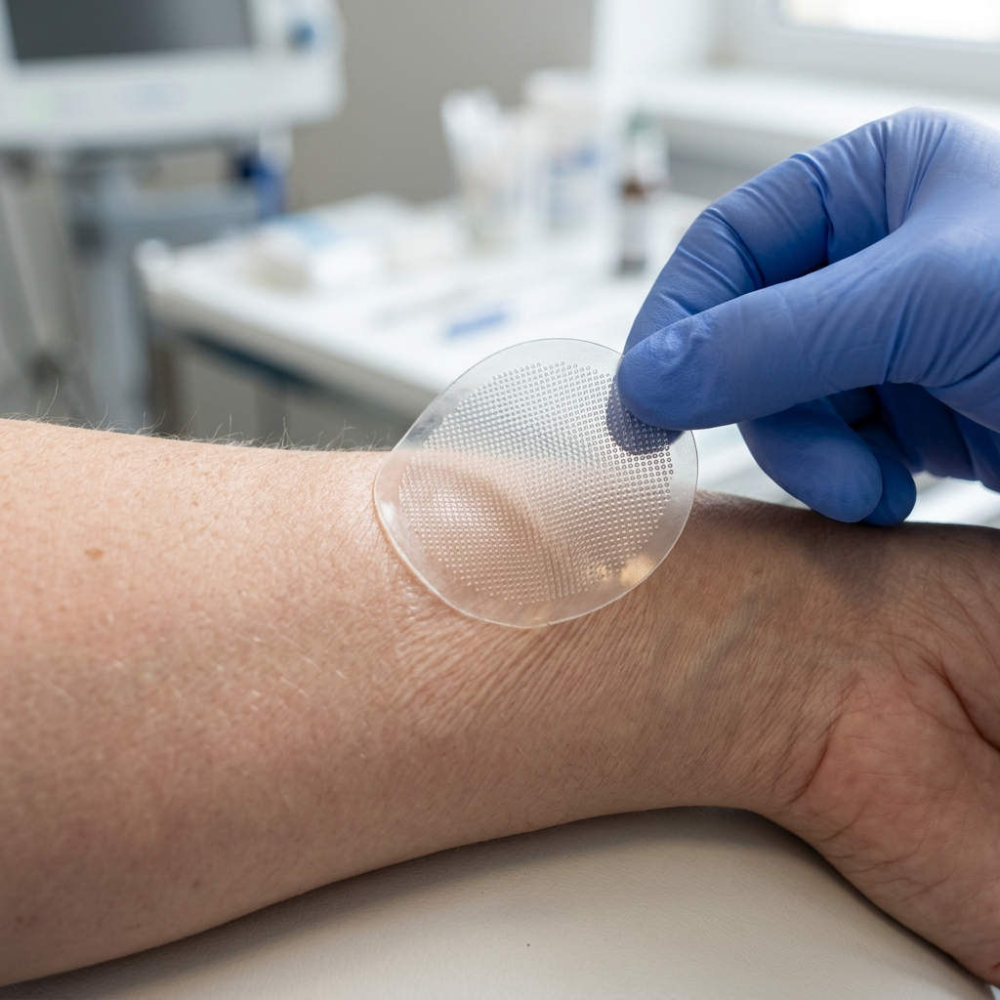

Floor — Stone
Biomechanics, Gait Analysis & Bio-Inspiration
Gecko's diagonal limb pairs (FL+RR) mirror human arm-leg counter-swing — left arm swings forward with right leg during walking.
Gecko peels toes upward to detach from surfaces, analogous to the human push-off phase where toes hyperextend to propel the body forward.
Gecko's body undulates side-to-side during locomotion, similar to human trunk rotation and pelvic counter-rotation during walking.
Gecko's quadrupedal support polygon (4 contact points) vs human inverted pendulum model — both optimize center of mass trajectory.
From millions of years of evolution to cutting-edge engineering — discoveries inspired by gecko biomechanics.
Robots using synthetic setae arrays can scale glass walls and traverse ceilings. Stanford's Stickybot and DARPA's Z-Man program demonstrate gecko-mimetic climbing at human scale.

Gecko-inspired dry adhesives use micro-pillar arrays with mushroom-shaped tips to create strong, reusable adhesion without chemical glue — ideal for space applications.

Gecko toe pads show a remarkable hierarchy: lamellae → setae → spatulae. Each foot has ~500,000 setae generating van der Waals forces sufficient to support the gecko's weight.

DARPA's Z-Man project created gecko-inspired paddles enabling a 100 kg person to climb glass. Each paddle uses millions of synthetic micro-fibers creating directional adhesion.

Comparing gecko's natural setae arrays with synthetic micro-fiber grippers reveals converging design principles: hierarchical structure, directional adhesion, and easy release.

Gecko-inspired medical adhesives provide strong, painless, residue-free bonding to skin — ideal for surgical tapes, wound closure, and wearable sensor attachment.